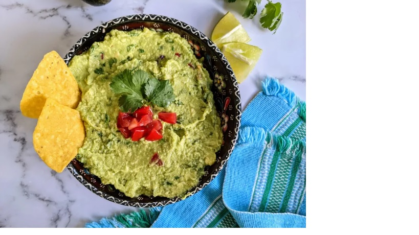

Guacamole
Guacamole is an avocado-based dip or spread that originated in Mexico.It's typically
made with mashed avocado and lime juice, then seasoned with salt and cilantro.
Guacamole often contains tomatoes and onions.
Prep time: 15m
Servings: 4
Ingredients
- Avocados
- Lime
- Salt
- Vegetables
- Herbs and spices
Steps
- It couldn't be easier to make restaurant-worthy guac at home: Simply mix all the
ingredients together! That's it. You'll
find the step-by-step recipe below.
- Serve this guacamole with tortilla chips, crackers, or fresh vegetables for dipping.
You can also spread it on toast, use it as a hamburger or sandwich topping, or
dollop it onto a baked potato.